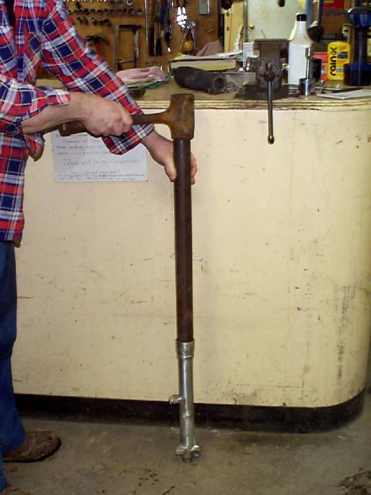

Repair / Suspension
Suspension
Problems, repairs and parts for the suspension.


Photo: Dan's Motorcycle Repair Course (dansmc.com), used with permission.
Problems
- Front forks bottom outRide with care
- Front forks feel harsh over bumpsRide with care
- Oil leaking from a fork legRide with care
- Knocking or squeaking from the front forksRide with care
- Front forks feel sticky or stiffRide with care
- Fork legs are twisted or unevenDo not ride
- Rear bounces after bumpsRide with care
- Clunk from the rear suspensionDo not ride
- Rear suspension feels harshRide with care
- Rear sits too lowRide with care
- Oil leaking from a rear shockRide with care
- Swingarm moves sideways or has playDo not ride
- Fork leaks again soon after new sealsRide with care
Repairs
- Inspect the front forksRider job · 10 min
- Clean fork sealsHome workshop · 15 to 30 min
- Replace fork oil and sealsWorkshop job · 15 min assessment; service time set by the workshop
- Replace disc brake padsHome workshop · 30 to 60 min per caliper
- Measure suspension sagHome workshop · 20 to 30 min
- Check tyre pressureRider job · 5 min
- Align the front wheel, forks and handlebarHome workshop · 30 to 60 min
- Inspect the frame after a crashWorkshop job · home assessment 30 to 45 min; workshop measurement 1 to 2 h
- Check chassis fastenersHome workshop · 30 to 60 min
- Check the steering head bearingsHome workshop · 10 to 20 min
- Check the rear shock absorbersHome workshop · 15 to 30 min
- Adjust rear spring preloadRider job · 5 to 15 min
- Check the swingarm pivotHome workshop · 20 to 45 min
- Check wheel bearingsHome workshop · 15 to 30 min
- Check and adjust chain slackRider job · 20 to 30 min
- Check the cush drive rubbersHome workshop · 30 to 60 min
- Check exhaust mounts and heat shieldsRider job · 15 to 30 min